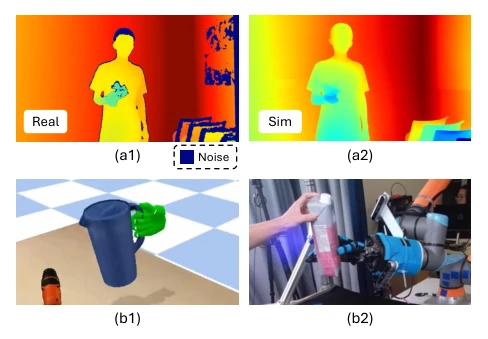
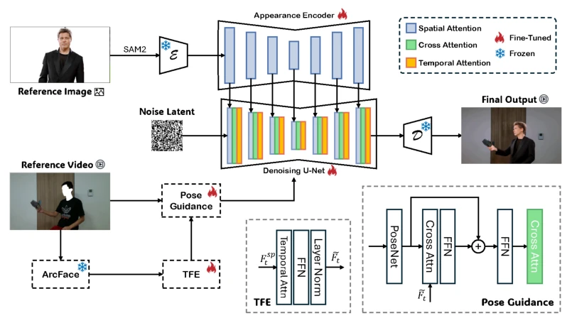
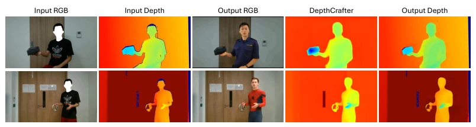
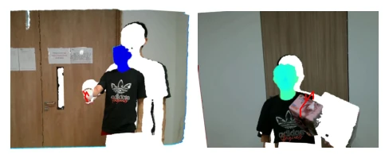
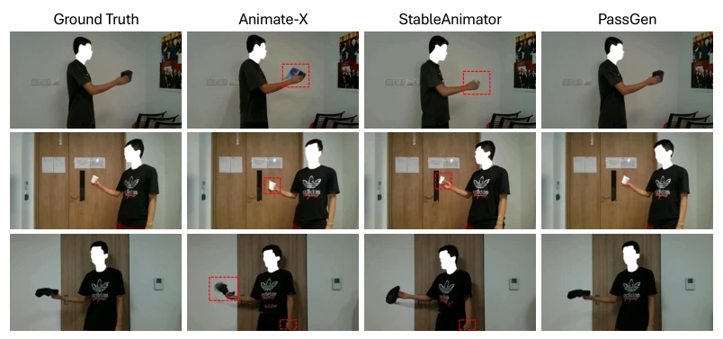

This work attempts to leverage generative models to address the data hunger of H2R handover tasks and the Sim-to-Real gap. The highlights lie in constructing the Hand2Bot dataset containing real sensor noise and proposing PassGen to generate RGB-D sequences. However, honestly, background staticization limits generalization, and depth noise simulation resembles heuristic approximation rather than physical modeling. For robots, perceiving eye contact is more reliable than merely observing hands, yet employing facial micro-expressions as trigger conditions raises questions about sensitivity in actual deployment. After all, robots are not mind-reading masters. Nevertheless, the zero-shot transfer capability verified on UR5e indeed demonstrates the value of data augmentation for policy learning, outperforming pure synthetic data at least, particularly excelling in suppressing false triggers.
H2R handover is the cornerstone of collaboration, yet existing data is either too artificial or too narrow. HandoverSim [6] and GenH2R [7] are synthetic datasets lacking edge scattering and noise from real depth sensors, resulting in a significant Sim-to-Real gap. Although DexH2R [8] is real data, its perspective is limited to hands, ignoring global social cues such as facial expressions and posture. As shown in Fig. 1, real depth maps are filled with random noise, whereas synthetic data is overly clean. Existing methods struggle to distinguish "intentional handover" from "unintentional shaking", leading to high false trigger rates. Therefore, a generative framework that fuses full-body posture, social intent, and real sensor noise is required to support more robust intent prediction, preventing robots from grabbing indiscriminately in shared spaces.

Figure 1: Existing bottlenecks in current H2R handover datasets. (a1) and (a2) compare a noisy real-world depth map against a clean synthetic depth map. (b1) and (b2) demonstrate the restricted, hand-centric field of view in mainstream benchmarks.
The core is the PassGen two-stage generation pipeline. The first stage RGB generation is based on Stable Video Diffusion (SVD), introducing Pose Guidance to maintain hand-object interaction consistency, and innovatively incorporating an Intention-Aware Temporal Face Encoder (TFE) that utilizes ArcFace to extract facial embeddings, capturing eye gaze and micro-expressions as intent priors. The second stage depth generation is first initialized using DepthCrafter [14], then simulates the "hole" noise distribution of Intel RealSense L515 via a morphological erosion strategy, rather than simple smoothing. Finally, the Intention Gating (IG) mechanism fuses gaze confidence and object approach speed, triggering grasp trajectories through monotonic constraints to ensure safety. Formally, the intent score combines visual attention and spatial proximity cues, with the threshold set at 0.80 to balance response speed and false alarm rate.

Figure 3: Pipeline of our PassGen. Our method is based on an SVD backbone, with two branches of networks. Given a pair of reference images Iref and video Vref, the appearance feature from Iref and the temporal feature from Vref are operated by corresponding modules separately. We also elaborate on the structures of TFE and Pose Guidance (PG) blocks in the bottom right corner.

Figure 5: Qualitative comparison of generative RGB-D sequences. Our PassGen pipeline effec- tively reconstructs human-object interaction geometry from sparse L515 inputs while maintaining realistic sensor noise patterns compared to over-smoothed baselines like DepthCrafter [14].
The Hand2Bot dataset was constructed with 5000 pairs of RGB-D video pairs, containing 2125 real and 2875 generated data. Tested on the UR5e platform, comparing against a no-IG baseline. Results show that the Full Module increased Mean Acc to 90.0% and reduced FPR to 13.6%. Ablation experiments demonstrate that the TFE module has a significant impact on FVD, indicating that eye consistency is crucial. Compared with DepthCrafter [14], depth maps generated by PassGen retain sensor noise features (Fig. 5). Although ISR slightly decreases on non-standard objects, the overall false trigger rate is far lower than the no-IG system (2/30 vs 25/30), verifying the effectiveness of multimodal intent gating. The testing covered 5 seen and 5 unseen objects, demonstrating zero-shot transfer potential.

Figure 2: Grasp Pose Annotation. We give two examples of the GraspNet-based annotation on our Hand2Bot dataset. We mask all facial regions and replace them with the corresponding visualized depth maps.

Figure 4: Qualitative results on Hand2Bot-Real dataset. We compare our method with other SOTA human video generation algorithms on different reference images and video frames from our Hand2Bot-Real dataset. Our PassGen shows a promising and stable performance compared with other SOTA methods. We mark the artifacts of the previous methods with red boxes.